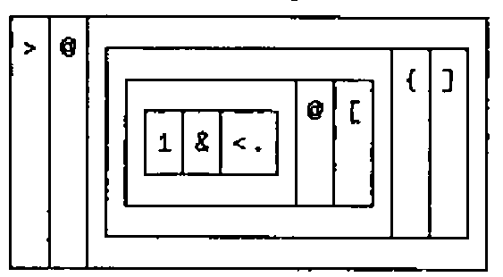

J Questions and Answers
Vector 8:3, page 94
Transcribed from the printed issue; not yet reviewed. Read it in the PDF of the issue, page 94
When preparing for this issue of Vector my first and most essential task was to study J. Some questions occurred to me which I could not answer immediately from the documentation supplied, so I wrote to Roger Hui for elucidation. Roger Hui and Ken Iverson have kindly agreed that their answers may be published. Their reply grouped all their answers under five main topics. I have inserted the questions next to each of their answers.
STATUS.DOC, Version, and Editions¶
- JB
- The
STATUS.DOCfile marks many features as Not Yet Available. When do you plan to make these features available? - RH & KI
-
The file
STATUS.DOCrecords the history, current state, and machine-dependent aspects of the implementation. Items are marked NYA (not yet available) if they are described in the dictionary but are not yet implemented, and serve to explain nonce or other errors that would be signalled if these items are invoked. Of the more than 180 nouns, verbs, derived verbs, adverbs, conjunctions, and other language facilities described inSTATUS.DOC, only thirteen are marked NYA. These items are not available in any other APL dialect either, and their current unavailability does not impair the use of the rest of the system. Thus we would not characterise the situation as one where "many features" are not yet available.Of the thirteen NYA items in version 3.4, four (infinity and indeterminate) are now partially available and a fifth (polynomial roots) is under active development. These will be released in due course.
- JB
- Do you expect that J will change in a way which might make it difficult for users to move to a new version? At this early stage in development I suspect that you would want to keep a free hand, and not be constrained by programs written in previous releases of J.
- RH & KI
- In the 18 months since J was first released, there have been fifteen versions, resulting from releasing new features as soon as they are implemented. We plan to have less frequent but more substantial releases in the future. As the implementation history in
STATUS.DOCindicates, there are very few changes which make older versions incompatible. Incompatibilities have been mostly in the form of spelling changes, a form of incompatibility readily dealt with by a text editor. Continuing to use older versions is not the problem that it is on mainframes; in particular, the size of the J system permits the co-existence of several or all versions in the average personal computer. - JB
- I noticed that
STATUS.DOCdescribes features that are not in the Dictionary, for example9!:10and9!:11. As the Dictionary of J [4] is dated 1991, I assume that you will not issue a revision in the very near future. How often to you expect to issue revised versions of the Dictionary? - RH & KI
- New editions of the dictionary are generally produced when the language is significantly extended; over the past 18 months, there have been four editions. From time to time,
STATUS.DOC(being more malleable) can be slightly more up-to-date than the printed dictionary. This is the case with9!:10and9!:11(query and set system command names): at the time of printing, the current edition of the dictionary anticipated that system commands would be replaced by new verbs and hence there would be no need for9!:10and9!:11. Except for these two items,STATUS.DOCdescribes no language features not in the dictionary.
Working with J¶
- JB
- Editing and debugging J seems to be extremely difficult. What techniques do you advise for editing defined verbs? I would expect to be able to write a verb that does the necessary translation to and from the format suitable for
8!:9, but could not see how to do it in the short time I have been playing with J. - RH & KI
-
One might organise the work as follows: Definitions relevant to a particular problem are kept in a script file. (Any explicit definitions are included.) The interactions in a session depend on the machine: on systems supporting windows (such as the Macintosh or UNIX X-windows), the script file would be in a separate text editor window, and executing the script in a J window occurs concurrently with editing the script in the editor window. On single-screen systems, executing the script in J alternates with editing the script (without terminating the J session), using the
8!:9editor or PC-WRITE (PC) or the vi editor (UNIX), or whatever editor is available in the underlying system. Here, using the standard ASCII character set is an advantage: standard editors handle J scripts with ease.Given this way of working with scripts, we seldom attempt to edit the display representation (
5!:2) of objects, preferring instead to edit the source script. - JB
- How should one implement Stop and Trace? Is it possible to define a verb or adverb to do the job? Page 69 of Programming in J suggests adding a leading
[, but this did not seem to produce any output for my defined verbs. - RH & KI
- If
pr=.1!:2&2, composingprwith tacit verbs or prefacing each line of an explicit definition byprprovides an execution trace. The use of insertions in programs to get the effect of trace and stop is admittedly awkward, and we intend to provide further facilities.
Formatting¶
- JB
- Formatting in J appears to be very limited. I was expecting something along the lines of the APL2 type formatting, rather than the full
⎕FMT. Negative numbers are carefully avoided in the illustration of a report on page 53 of Programming in J. I had hoped for a demonstration of the techniques for adding decorations to numbers. Do you plan to introduce more powerful formatting, or do you feel that this is not appropriate for J? - RH & KI
- It is unlikely that format (
":) will be extended to do "picture format" or to insert parentheses, commas, currency symbols, and the like. The current":is adequate and has no problems with negative numbers. There was no deliberate intent to avoid negative numbers on page 53 of Programming in J - that example is a report on return on investment, and may return on investment stay ever positive! More elaborate reports can be written by the user, as the Programming in J example illustrates. Alternatively, one could forward arrays to external presentation packages for further processing. The "host" (0!:), file (1!:), and LinkJ [3] interfaces make this possible and easy.
Line Labels¶
- JB
- The example loop shown on page 18 of Programming in J has line numbers hard coded, and there is no illustration of the use of line labels. I assume that you just ran out of room for a relatively uninteresting topic, rather than having anything against line labels.
- RH & KI
- In explicit definition, the sequence control
$.permits sequencing more elaborate than in other dialects, and the use of line labels with$.permits sequencing analogous to the branch arrow. Programming in J was first published in October 1990; line labels only became available on 1991 2 15. Hence the absence of examples involving line labels.
Tacit and Explicit Definition¶
- JB
- When one of my initial efforts at defining a verb crashed with an
index errorI was not aware if the verb was still on the execution stack. What happens when an error is encountered? Can one look at local variables?)sigives anonce error; will this feature be included soon? - RH & KI
-
Several of your questions concern the explicit definition of verbs (those derived from the
:conjunction). In our own work, we hardly ever use the explicit form; instead, a typical application consists of a set of tacit definitions [1]. For example:The problem is decomposed into meaningful subunits that are solved by separate, simpler verbs. These verbs can be tested and debugged independently; intermediate results of the overall verb, being just results of the intermediate verbs, are readily available. The decomposition serves as excellent documentation. This style of programming (of course) does not originate with J, and is practicable in other APL dialects. See for example Programming Style in APL [2].
- JB
- As an exercise I rewrote the looping example shown on page 18 of Programming in J with line labels, setting a local variable
lines=.L1;L2, and then selecting the lines to be executed with$.=.>(1<.y.){lines. In an attempt to remove the parentheses in the latter statement I tried to create the tacit form with'>(1<.x.){y.' : 11to see if that would give a clue on how to glue the thing together. All I got was anindex error. The{seems to cause the problem, as substituting another verb (e.g.+) produces a result. Is this a bug? - RH & KI
-
An explicit sentence on nouns
x.andy.resulting in a noun, can be translated into a tacit verb using:11. For example:![The boxed display of nub: a fork whose left tine is the fork (i. @ (# @ ]) = ] i. ]), then # and ]](nub.png)
The translator works by executing the sentence and produces a tacit verb as a by-product. In this execution the system initialises
x.andy.to 1 by default. This is why'>(1<.x.){y.':11failed:1{1should signal index error. The dictionary does provide sufficient information to derive a remedy: In general, the left argument to:11is a boxed list consisting of the sentence to be translated and non-default values ofx.andy.. Thus:
- JB
- I have not worked through all the examples in Chapter 5 of Programming in J, but having got the tacit form with
a=.'>(1<.x.)+y.' : 11and converted it withb=.5!:2 <'a', I found difficulty replacing the+with{. Having made the replacement it was annoying to discover that5!:0is not yet available as an inverse for5!:2! What should I have done? - RH & KI
-
We are sorry that you were disappointed that fix (
5!:0) currently does not define an object from its display representation. It is quite possible that5!:0will never be so extended, because the display representation is not unique (for example,'+.'&,and+.&,have the same display). However,5!:0does invert5!:1(atomic representation) and5!:3(string or WSIS representation), and one could modify a verb by manipulating these representations. We plan to define and implement linear representations (5!:5), which is more convenient for editing. (For example, fornubdefined as above,5!:5<'nub'would produce'(i.@(#@]) = ]i.]) # ]'.) Linear representation makes a useful addition to the5!:series:5!:0fix
5!:1atomic (gerundial) representation
5!:2display representation
5!:3string (WSIS) representation
5!:4tree representation
5!:5linear representation NYA - JB
- I am not sure I understand exactly when a Hook or Fork is interpreted instead of the normal application of verbs. If I put the verbs in parentheses, or assign them to a proverb, then Hook or Fork is always used. How would I prevent the application of Fork to a train of 3 verbs which is assigned to a proverb? For example,
a +*- bis not a Fork, but assigning the verbsf=.+*-means thata f bis a Fork. I am nervous that a such a simple rearrangement should change the way in which the verbs are applied. Is this unreasonable? - RH & KI
- As stated in the dictionary, a hook or fork is produced by an isolated sequence of verbs; the isolation may be produced by punctuation (parentheses) or be a sentence such as
mean=.+/%#. Punctuation may drastically change meaning in any language, as illustrated by the pair of APL expressions(+/x)++/xand+/x++/x, and by the pair of English sentences "The teacher said he was stupid" and "The teacher, said he, was stupid". - ED
- Obviously a silly question! Donald McIntyre explains the topic in some detail in his article "Hooks and Forks and the Teaching of Elementary Arithmetic".
References¶
[1] Hui, R.K.W., Iverson, K.E. and McDonnell, E.E, Tacit Definition, APL91 Conference Proceedings, APL Quote-Quad, Volume 21, Number 4, 1991 8.
[2] Iverson, K.E., Programming Style in APL, Proceedings of the APL Users Meeting, I.P. Sharp Associates, 1978 9. Reprinted in A Source Book in APL, APL Press 1981.
[3] LinkJ allows C to call J and J to call user-written C functions.
[4] Iverson, K.E., ISI Dictionary of J, Iverson Software Inc., 1991.
Typesetter’s Note¶
As with APL, J is developing a tradition of using a simple monospaced font (such as Courier) for code and sample output. This has the advantage that things are easy to line up, but a particular problem with Courier (apart from the fact that it is too light on the page) is that the standard PostScript font lacks any of the PC line-drawing characters. This makes a nonsense of most of the examples!
Accordingly, I have had a quick hack at my APL-2741 font, essentially to make it upright (rather than oblique), and slightly heavier. Page 72 shows the two fonts side by side if you want to see the general effect. As it is very likely that Vector will continue to print articles about J, I would like to get the new font as tidy as I can, so that it adds to (rather than detracts from) the readability of the code. Please address any comment8s to Vector Production, at APL-385.
The font will, of course, be put into the public domain as soon as the design has stabilised.